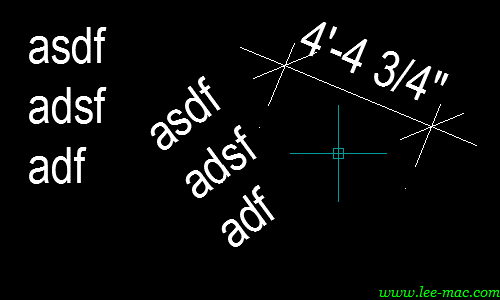

Cursor Rotate
This page is delivered for consistency purposes only, as part of the LeeMac sample module of DynALisp, which shows how DynALisp turns existing AutoLISP programs into a module. The program and its description are the work of Lee Mac, who keeps all the credit for them. The original page, with the latest version, is on Lee Mac's website: https://lee-mac.com/cursorrotate.html
| Function Syntax | LM-CursorRotate – original syntax: cr (see aliases) |
| Current Version | 1.0 |
| Compatible with AutoCAD for Mac? | No |
| Compatible with AutoCAD LT? | Yes |
| Original Page | lee-mac.com/cursorrotate.html |
Program Description
This program allows the user to rotate the AutoCAD crosshairs (that is, modifying the SNAPANG system variable) to align with an object residing at a selected point, to a fixed angle, or to a fixed percentage representing a slope or incline grade.
Upon issuing the command syntax cr (Cursor Rotate) at the AutoCAD command-line, the user is prompted to specify a point residing on an object with which to align the AutoCAD crosshairs.
At this prompt, the user may pick a point located on any geometric linear or non-linear object, Text, MText, Dimension, or Block component, and the program will modify the value of the SNAPANG system variable such that the crosshairs are aligned with the object at the selected point.
The program will furthermore performs successfully with components of nested blocks (nested to any depth), components of dimensions (as demonstrated by the animation below), and under all UCS & View settings.
At the prompt, the user may also opt to specify or pick a fixed angle for the cursor rotation, or specify a percentage representing a slope or incline grade.
Demonstration

Bundled program notes
;;-------------------------=={ Cursor Rotate }==------------------------;;
;; ;;
;; This program allows the user to rotate the AutoCAD crosshairs ;;
;; (that is, modifying the SNAPANG system variable) to align with an ;;
;; object residing at a selected point, to a fixed angle, or a fixed ;;
;; percentage representing a slope or incline grade. ;;
;;----------------------------------------------------------------------;;
;; Author: Lee Mac, Copyright © 2015 - www.lee-mac.com ;;
;;----------------------------------------------------------------------;;
;; Version 1.0 - 2015-09-25 ;;
;; ;;
;; First release. ;;
;;----------------------------------------------------------------------;;
Command Names And Aliases
As in every DynALisp module, each program of this sample module has one main command, named LM-*, and the original command names of Lee Mac's page are kept as its aliases: they run the same command, and can be added, renamed or removed in Dyl-Suite (saved in Resources\Aliases.csv).
| Command | Aliases | Name |
|---|---|---|
| LM-CursorRotate | CR | Cursor Rotate |